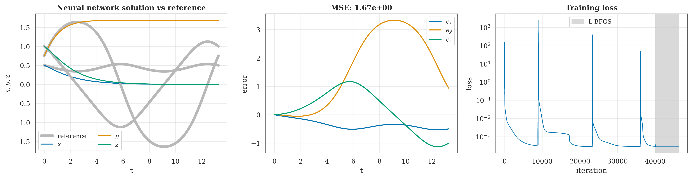
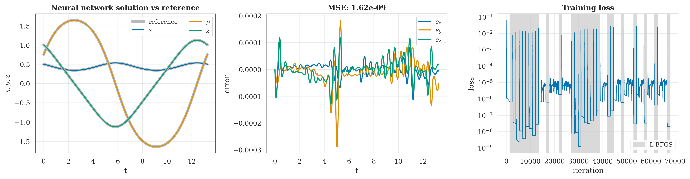
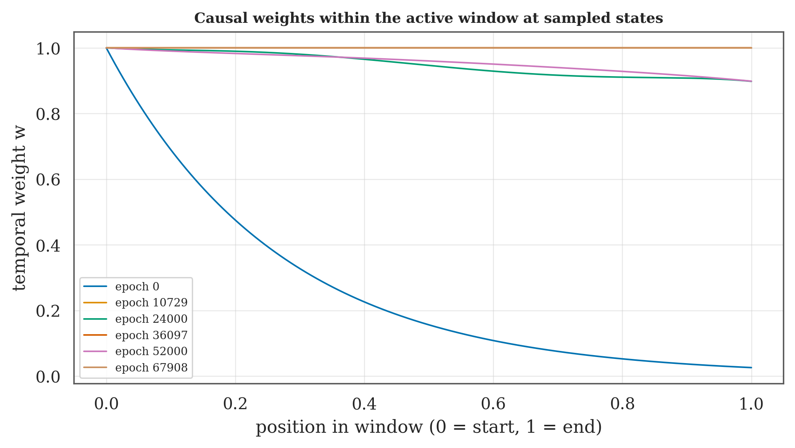
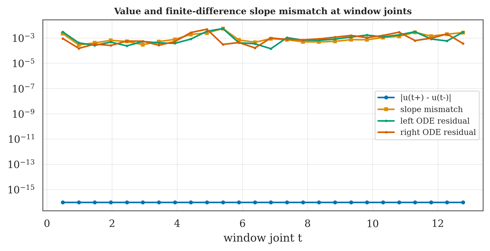

Physics-informed neural networks · Lorenz initial-value problem
Sequential Causal Training of Windowed PINNs for the Lorenz ODE System
Department of Computer Science and Engineering · United International University · Dhaka, Bangladesh
27equal time windows
over t ∈ [0, 13.26446]
over t ∈ [0, 13.26446]
6.97 × 10⁻⁵combined state RMSE
13,265 evaluation times
13,265 evaluation times
3.09 × 10⁻⁴maximum state-error norm
same evaluation grid
same evaluation grid
1.87 × 10⁻⁷ODE residual MSE
dense evaluation grid
dense evaluation grid
01
Problem setup
Approximate one nearly closed orbit of a three-state Lorenz initial-value problem.
ẋ = −0.1 yz
ẏ = 1.6 xz
ż = −0.75 xy
u(0) = (0.5, 0.75, 1.0)T
t ∈ [0, 13.26446]
t ∈ [0, 13.26446]
02
Full-interval observation

The saved full-interval network settled away from the reference trajectory, despite a reduced training objective. Original paper figure.
03
Windowed PINN method
Initial-value problemu(0) = (0.5, 0.75, 1.0)
t ∈ [0, 13.26446]
t ∈ [0, 13.26446]
→
27 equal windows≈ 0.491 time units
1,536 collocation times each
1,536 collocation times each
→
Window k PINNSeparate 4 × 60 tanh network
Hard initial condition
Hard initial condition
→
Train and refineFour causal Adam stages
Unweighted L-BFGS
Unweighted L-BFGS
Repeat k = 0 … 26: save the trained window, pass its predicted endpoint as the next initial state, and warm-start the next network with its weights.
After training, compare the stitched prediction with DOP853. Reference values do not enter the optimization objective or stopping rule.
Inside each window
Hard initial condition
ûk(t) = u0,k + (t − tk)Nk(t)
ODE residual
rk(t) = dûk/dt − f(ûk(t))
Causal Adam stages
ε = 0.01 → 0.1 → 1 → 10; advance when min weight > 0.99 or at 4,000 updates.
Refine and hand off
Unweighted L-BFGS, then pass the predicted endpoint state and warm-start weights.
04
Trajectory and error evidence

Saved 1536-point candidate run: prediction against the numerical reference, signed state errors, and training-loss history. Headline state-error metrics use the 13,265-time evaluation grid.
05
Measured results
| Measure | Full interval | 27 windows |
|---|---|---|
| Networks | 1 | 27 |
| Collocation points | 39,793 LHS | 41,446 uniform |
| Combined state RMSE | 2.237 | 6.97 × 10⁻⁵ |
| Max state-error norm | 3.346 | 3.09 × 10⁻⁴ |
| Residual MSE collocation grid | 2.80 × 10⁻⁴ | 1.87 × 10⁻⁷ |
| Recorded wall time | 4,529 s | 881 s |
Descriptive comparison of two saved configurations. Network count, sampling, loss, and optimizer schedule also differ, so this does not isolate the effect of causal weighting.
Causal weights

Time-ordered residual weights emphasize earlier points before later points in each window.
Candidate 1536-point run · ε stages 0.01, 0.1, 1, 10.
Window handoff

At each interface, the next trial solution starts from the previous predicted endpoint. State values are continuous by construction.
Derivative continuity is not enforced.
06
Scope and limitations
- One saved seed, initial state, coefficient set, and nearly closed interval.
- Earlier prediction error can propagate through endpoint handoff.
- State values meet at interfaces; derivatives may jump.
- No saved matched windowed run without causal weights.
The saved run demonstrates this implementation on this Lorenz initial-value problem. A matched, multi-seed study is needed to isolate component effects and test broader reliability.